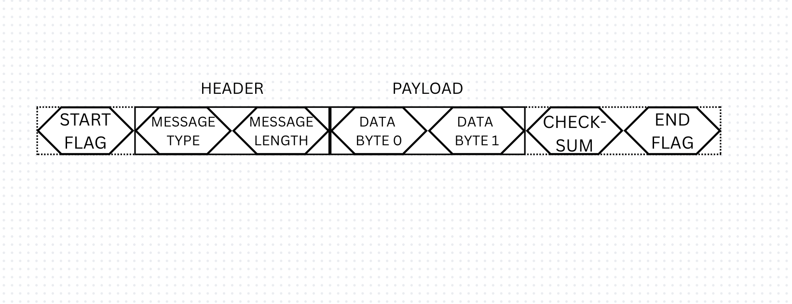

Objectives
The objective of this project was to design and implement a custom communication protocol over UART for reliable sensor to microcontroller to PC data transfer. The reason for this was to go beyond 'Serial.print()' and develop a more structured and robust method of communication.
Two main pieces of code were written. The Arduino firmware read the sensor reading, formatted it into my custom packet structure and then transmitted it over UART to the PC. The sensor used was an HC-SR04 ultrasound sensor to get a simple distance measurement.
On the PC side, I wrote a reciever program in Python. This program opened the serial port, read the raw byte stream, synchronises using the packet structure and parses the raw bytes into useable values.
Framing
Flag bytes were introduced first, these are byte values that denote when a frame begins/ends. The data bytes are sandwiched between the flag bytes. This makes it clear to the receiver where a frame begins/ends, however what if the value of the flag byte appears in the data? The reciever would think the frame ended too early and data would be lost.
To solve this, I implemented byte-stuffing with escaping. Whenever a flag byte appears in the data, an ESC (escape) byte with a specific value is inserted before it, then the reserved byte is XORed with 0x20. When the receiver sees this specific ESC byte, it ignores it and the following byte is restored by reversing the XOR operation.
Next I added a simple checksum. The checksum is calculated by XORing all the bytes in the frame, and the checksum byte is added to the end of the frame. Once the packet is recieved on the PC end, the checksum operation is carried out again on the recieved data, and the reciever makes sure that this new checksum matches the transmitted checksum byte. If they match, the frame is valid and the data is processed, if not the frame is discarded.
Lastly, two header bytes were added before the data. One byte is used to represent the message type e.g 'distance measurement', this means that different types of sensors can transmit data through this protocol. The other byte holds the payload length. As with the checksum, the reciever checks that the length of the received packet matches the value in the transmitted length byte. If it doesnt, the frame is discarded.
Packet Structure
Conclusion
The reciever program was able to process the raw bytes, interpret the data and measurement type, undo the escaping operation, and verify the frame using the length check and the checksum. While the initial focus was just on transmitting ultrasonic sensor readings, this protocol can be easily extended. It serves as a reliable method to transmit data from a microcontroller to a PC.
I plan to extend this project to bidirectional communication between the two devices using this protocol.